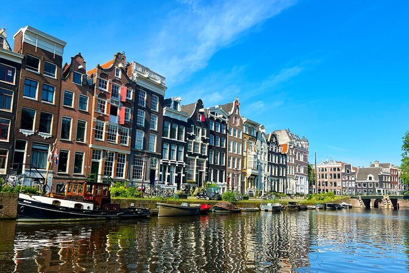

Amsterdam
The Venice of the North
Why Visit Amsterdam?
Amsterdam's canal system is what makes the city work structurally and aesthetically. The waterways connect different neighborhoods efficiently while also providing the visual backdrop that defines how the city feels. Cycling is genuinely the primary way to navigate here, so you end up covering a lot of ground without much friction. The museums like the Van Gogh Museum and Anne Frank House are substantial institutions with real historical value. The café culture is straightforward and accessible, giving you plenty of places to sit and watch how the city operates. Walking or biking through different neighborhoods reveals their individual characters, from the old center to outlying areas. If you're interested in urban planning, cycling infrastructure, museums, architecture, or just seeing how a functioning European city operates, Amsterdam delivers on all these fronts.
Amsterdam Gallery


